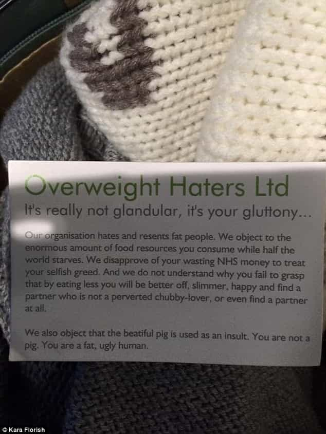
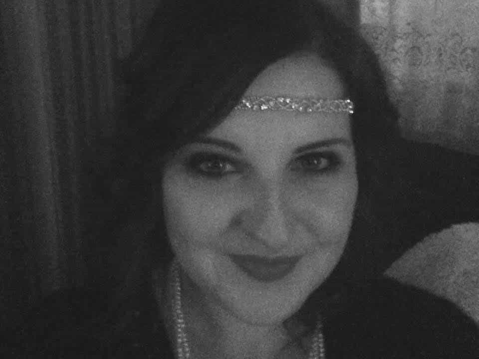
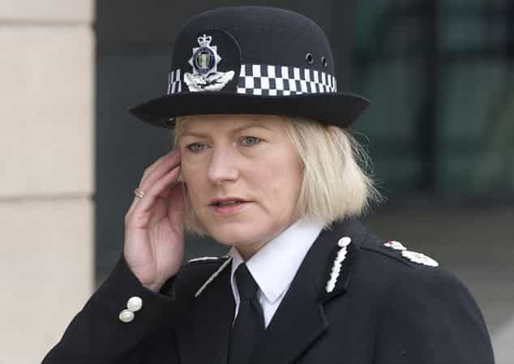

< < < Back
London Men Investigated By Police For Telling Fat Women They Are Fat – Return Of Kings
British Transport Police are investigating after women were handed detailed cards calling them “fat” and “ugly” on the London Tube public transport system. From the facts so far, these cards come from a group called “Overweight Haters Ltd”. At least two women, including Essex’s Kara Florish, contacted law enforcement about being presented with these rather lengthy anti-fat person statements. Mind you, this is months after British police said they will prioritize online abuse and “threats” over crimes like burglaries.
Is this anti-fat person behavior on the Tube rude? Certainly. But rudeness and a perceived lack of manners have always encompassed a much broader range of words and actions than criminal matters. Critics of the cards and those distributing them are more than entitled to attack the idea of embarrassing these women. But their rage is selective to the bone. In a country like Great Britain, fully ten to twenty million instances of such rudeness happen every day. From schools to workplaces, on the street to nightclubs, people are humiliated in breathtaking ways.
Here is one of the cards:

How many times have you been similarly insulted in the past and not resorted to calling the police?

Man cuts in front of another man. Second man calls the first one a “fat loser,” which results in a police call. Excellent outcome!
I would hope that most Return of Kings readers, after the copious fitness and self-improvement advice we have given you, are healthy and trim individuals, minus any conditions outside your own control. But perhaps you used to be fat. Did you call the police if you were humiliated at a party because a girl called your overweight? I think not. And being shamed audibly for your weight or appearance is a lot worse in almost anyone’s books than being silently handed a card by a stranger.
Imagine how the police would react if you, a male, had been at a club and some girl you approached called you “a fat ugly loser” and told you to “fuck off,” only for you to respond by calling the police! It’s a fair bet you would be warned or actually punished for wasting police resources.
The same goes for other epithets, like being called a “creep” (basically female parlance for “likely rapist”). Cops would laugh in your face and anyone else who knew about your call to the authorities would regard you as the biggest crybaby on the planet.
There are a plethora of other ways to be bullied as well. Have you ever been excluded from a university or work social circle or, worse yet, been the recipient of insults about your achievements, your family, a disability or something similar? I knew one particularly maligned guy with a very “lazy eye” who found himself the butt of constant jokes, most notably from disinterested girls, for at least two years of college.
While I might be able to have a conversation with 3-400 people I went to school or college with, this poor person would be able to talk with maybe five before the memories became too much for him.
Transport authorities are calling for the wastage of police time

The guy was rude, Kara Florish, but please build your own London Bridge and get over it.
A senior official with Transport for London, Steve Burton, says that all passengers have the “right to travel with confidence,” whatever that means. There should of course be rules for using the Tube, such as the expectation that seats are vacated for the elderly. Transport staff can even justifiably reserve the right to remove disruptive passengers from stations or train compartments for infractions that fall short of criminality.
But it is when Burton advises offended commuters to contact the police over anti-social behavior without restriction that a line is crossed. I have been accosted by many drunks on the Tube during my travels, been abused for my skin color (by minorities) or my accent (by white British and non-white British alike). I don’t take it personally, as I know plenty of others have been in my situation. And these miscreants don’t represent even 5% of the people you see and sit or stand near on the Tube.
Real victims of (violent) crime are being left by the wayside

Politically correct senior officials like Sara Thornton have led the charge for “Twitter policing,” with their policies advising burglary and other victims to email in evidence or not necessarily expect a police response.
Crimes of hurt feelings now trump crimes of (non-sexual) assault and robbery, despite the hurt feelings the latter categories almost always create. This is the end result of savagely politically correct attitudes towards law enforcement and criminal justice. SJWs would be most proud.
Why pursue armed robbers, fiends who terrorize old ladies or vicious thugs when men handing out “you’re fat” cards can be chased all over the London Tube?
Read More: British Police Chief Will Prioritize Online Abuse Reports Over Burglaries